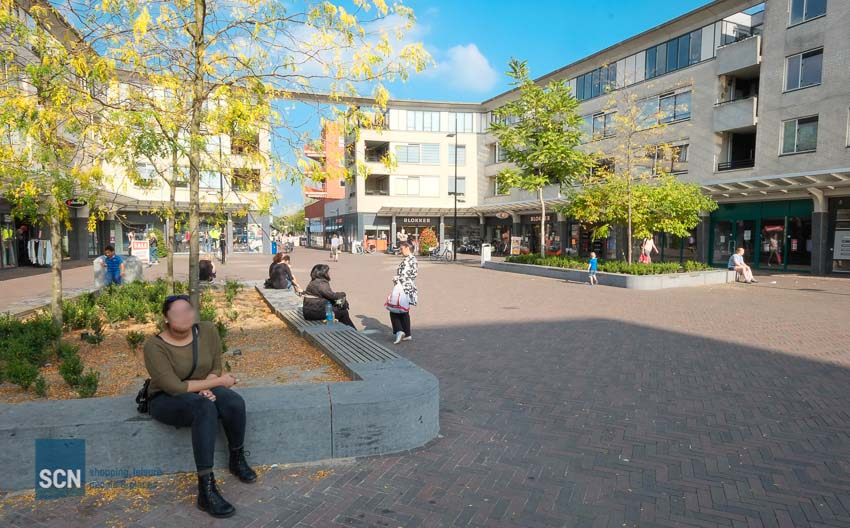
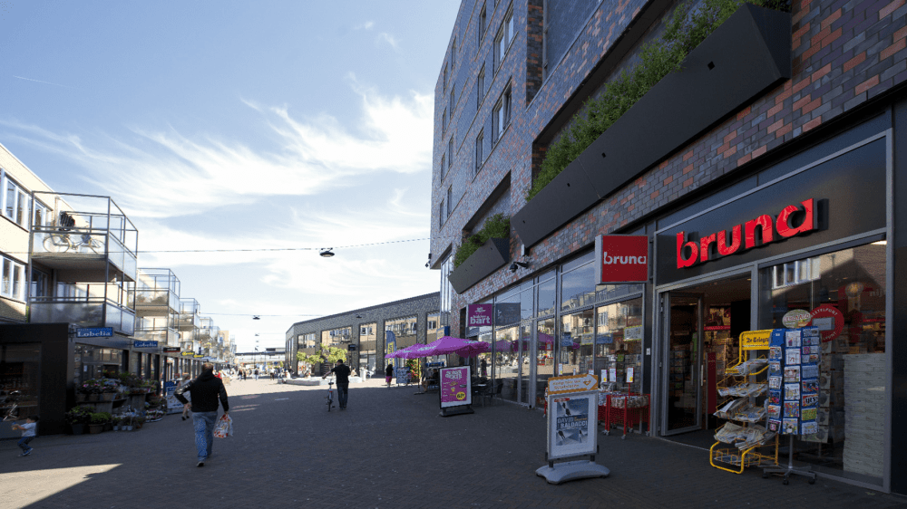

Studentenvereniging Bierhier
Nieuws uit Almere buiten

Waluigi (ワルイージ, Waruīji?) est un personnage de fiction qui apparaît dans des jeux de sport et des party games de Nintendo. Il s'est proclamé rival de Luigi. Il apparaît pour la première fois en 2000 dans Mario Tennis, où il a été créé pour être le partenaire de Wario1.Waluigi est de grande taille et est très maigre. On distingue ses os raide comme des bâtons sous ses vêtements. Il porte une moustache en forme de « L » à l'envers, a un nez crochu rosâtre et le menton en pointe. Il porte une salopette grise anthracite et un haut violet ainsi qu'une casquette également violette avec un « Γ » (l'inverse du « L » de Luigi, tout comme le signe de Wario « W » est l'inverse du « M » de Mario)2 et des babouches oranges.
Waluigi est un personnage assez mystérieux de l'univers Nintendo : rival de Luigi, il est aussi un des méchants dans Dancing Stage Mario Mix sur GameCube, où il veut obtenir les quatre clefs musicales, gardiennes de la musique.
 Il veut ainsi priver les populations de rythme, et devenir ainsi leur roi en dansant, pour être celui qui leur rendra ce rythme perdu3.
Waluigi n'a pas de jeu propre et on ne connaît pas son travail, cependant sa voiture-pelleteuse dans Mario Kart DS laissent supposer qu'il travaillerait dans les chantiers. On apprend dans le jeu Mario et Sonic aux Jeux olympiques d'hiver que Waluigi est l'associé de Wario4.
Il veut ainsi priver les populations de rythme, et devenir ainsi leur roi en dansant, pour être celui qui leur rendra ce rythme perdu3.
Waluigi n'a pas de jeu propre et on ne connaît pas son travail, cependant sa voiture-pelleteuse dans Mario Kart DS laissent supposer qu'il travaillerait dans les chantiers. On apprend dans le jeu Mario et Sonic aux Jeux olympiques d'hiver que Waluigi est l'associé de Wario4.
Stagelopen in Almere
Wario et Waluigi forment un duo parfait. Mais à l'inverse de son compagnon, qui réfléchit d'abord avec ses poings (d'ailleurs redoutables), Waluigi est plus enclin à planifier les choses. Ce duo fonctionne avec cette relation de « celui qui réfléchit avant l'action et celui qui réfléchit après l'action ». Au demeurant, sur le plan physique, Waluigi est doté d'une incroyable souplesse et d'un jeu de jambe inimitable.

Comme Wario, Waluigi est un antihéros. En effet, il est le héros de plusieurs jeux Super Mario sortis en majorité sur la GameCube.